01. Overview
While digital payment apps make transactions seamless, they also make spending invisible. **Spend Lite** is a self-initiated product case study proposing a lightweight, post-payment budget reflection mechanic built directly into Google Pay to build healthy financial habits.
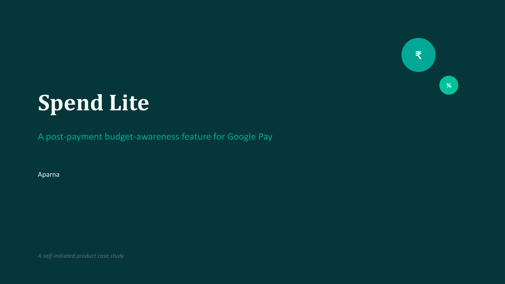
02. The Problem
Users receive notifications showing exact transaction amounts, but they routinely dismiss them without registering the hit. Spend visibility is not the same as spend awareness, leading to unexpected month-end budget blowouts.
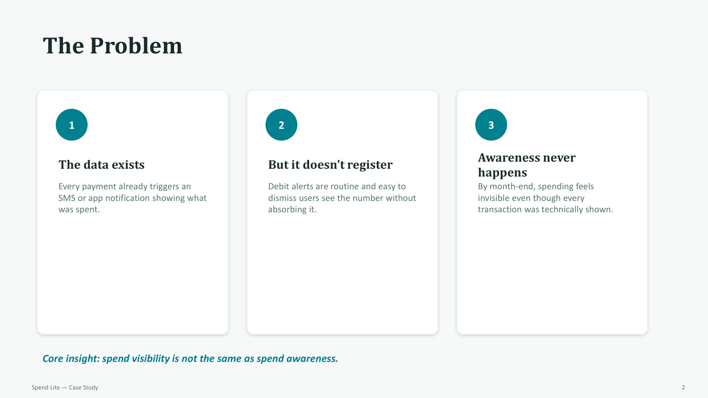
03. Target User
Focusing on college students and early-income users in their first 1–3 years of earning—a heavy day-to-day UPI segment with little to no formal budgeting habits:
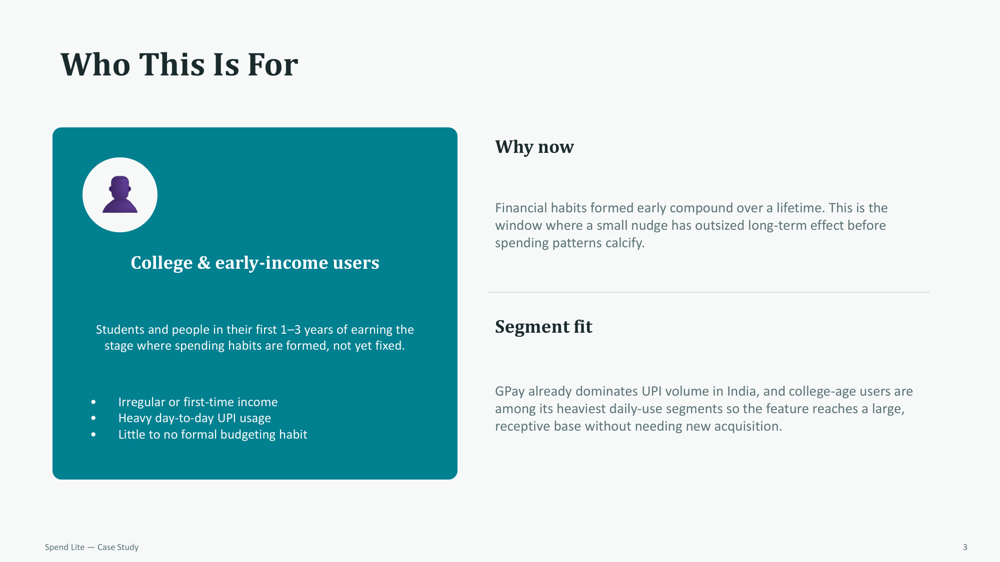
04. Business Value
Re-framing the feature's business rationale: by acting as a responsible financial ally under India's zero-MDR environment, GPay builds ecosystem trust, setting up future monetization through credit and insurance upsells:
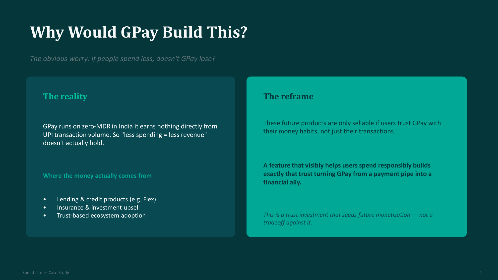
05. Solution Flow
Integrating budget limits natively into the post-payment flow to utilize the attention users already give the transaction confirmation screen:
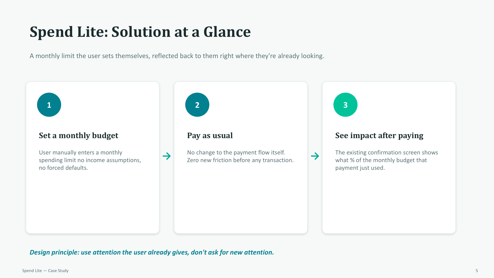
06. Design Pivot
Reversing the decision to interrupt users before payment. Reflecting *after* payment informs the driver without introducing annoying transaction friction or blocking purchases:
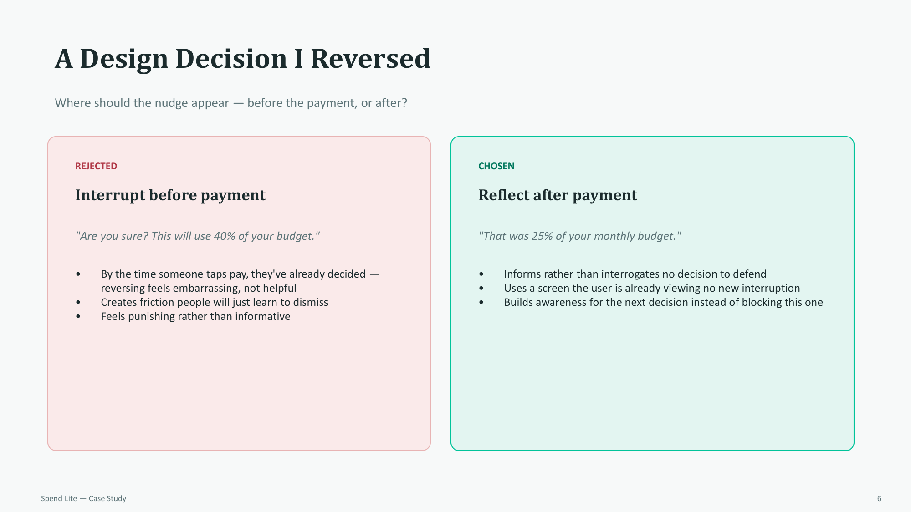
07. Setup Mechanic
Implementing manual monthly limit entry for V1 to respect that users know their own constraints better than early prediction algorithms:
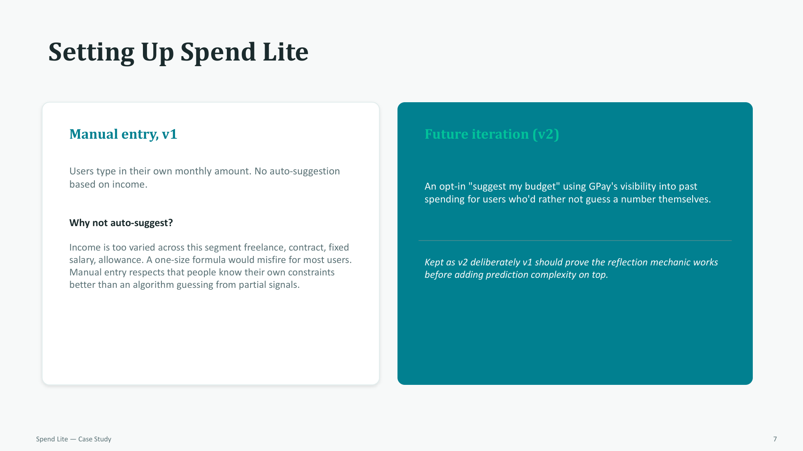
08. Relative Impact
Calculating severity as a percentage of the remaining monthly budget rather than using absolute rupee thresholds, ensuring notifications are relevant to the user's scale:
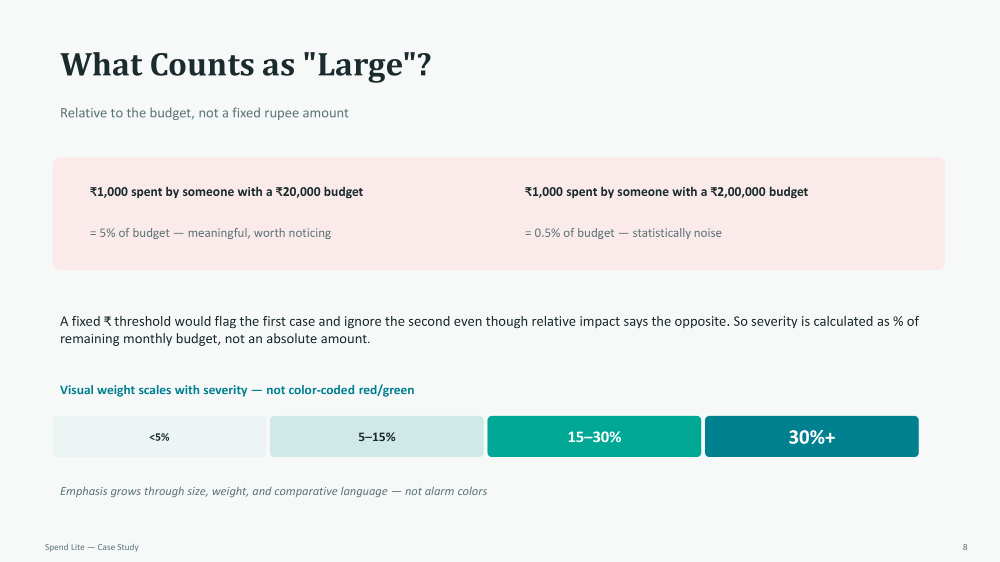
09. Notification Design
Visual weight scales based on transaction impact, using layout and size constraints to command attention for large spends without red/green alarm colors:
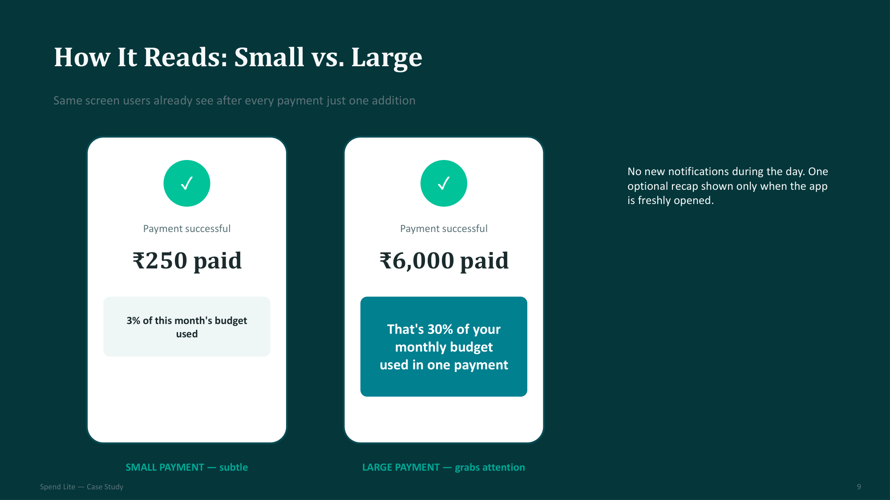
10. System Interface
Positioning the Spend Lite status card and progress indicator natively below recent transactions on the primary Google Pay home screen:
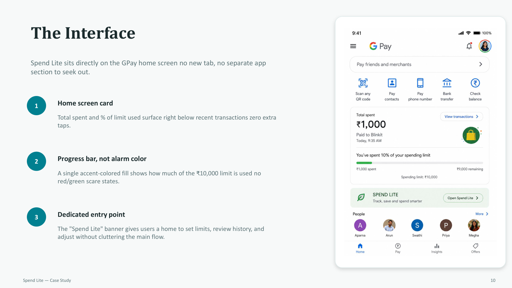
11. Feature Roadmap
Evaluating features using an Impact vs. Effort matrix, mapping quick wins like post-payment reflections for Phase 1:
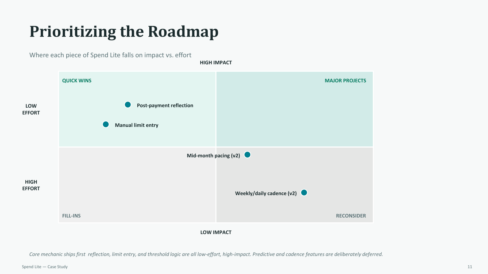
12. Success Metrics
Measuring actual behavioral change through budget adherence rates and nudge response correlation rather than simple passive views:
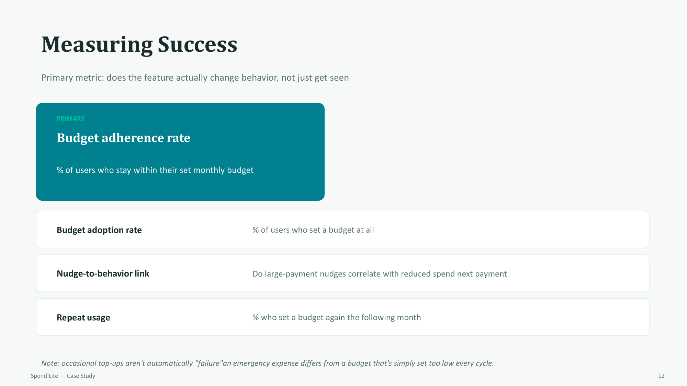
13. Scope Limits
Detailing what lies in-scope and out-of-scope for the V1 release to maintain a highly focused initial feature set:
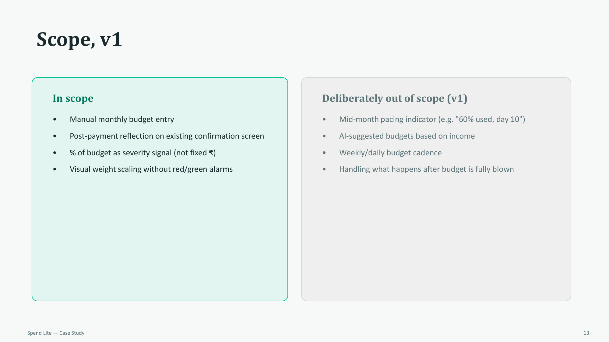
14. Final Summary
A final synthesis of the project's core design philosophy: reflecting relative impact where the user's attention already exists without adding friction to their decisions.
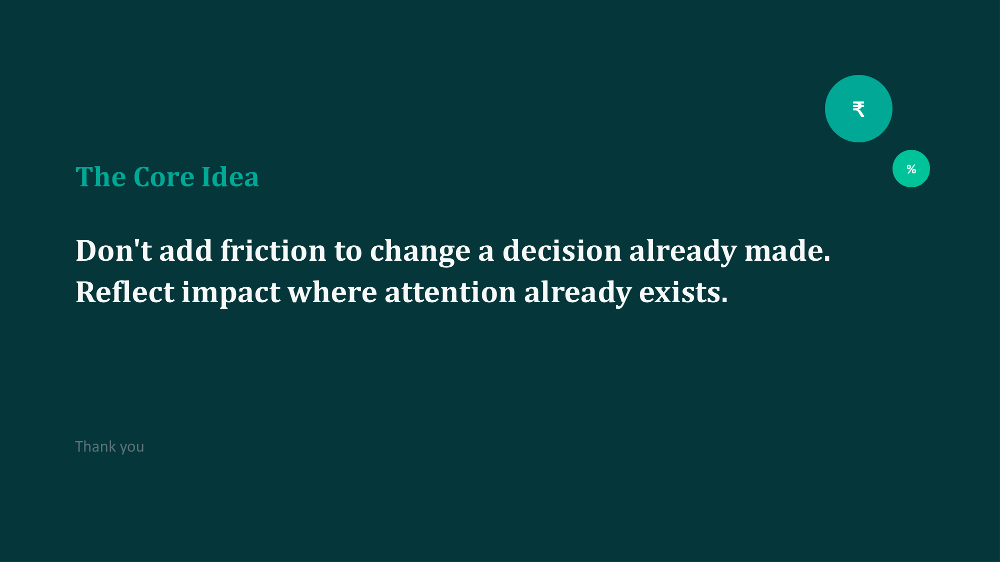